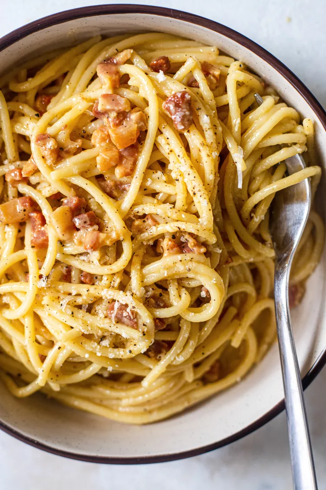

Pasta Carbonara

Description
Pasta Carbonara, sometimes called Spaghetti Carbonara, is a traditional Italian dish that combines pasta with a creamy sauce made from eggs, cheese, and pork. It’s a simple yet luxurious dish that’s perfect for a quick dinner or a special occasion.
Originating in Rome, Pasta Carbonara is a dish steeped in tradition. While its exact origins are debated, it’s a staple in Italian cuisine, known for its simple ingredients that come together to create a rich and satisfying dish.
Ingredients
100g pancetta.
50g pecorino cheese.
50g parmesan.
3 large eggs.
350g spaghetti.
2 plump garlic cloves, peeled and left whole.
50g unsalted butter.
sea salt and freshly ground black pepper.
Steps
Fill a large saucepan with water, put the lid on and bring to the boil over a high heat.
Add a good pinch of sea salt.
Once the water is boiling, stir in the pasta.
Cook the pasta according to the packet instructions.
Scoop out a mugful of the starchy cooking water and set aside.